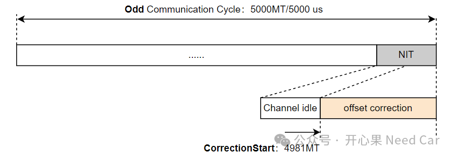
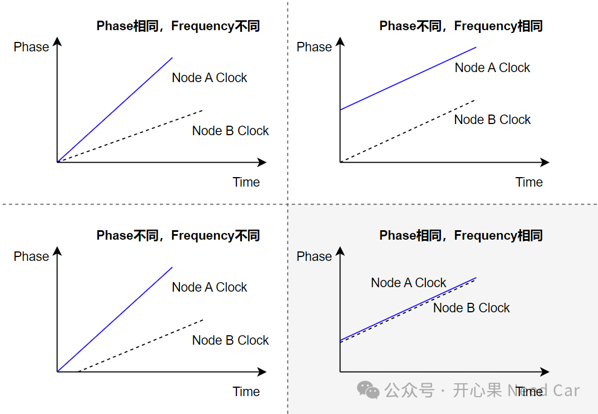
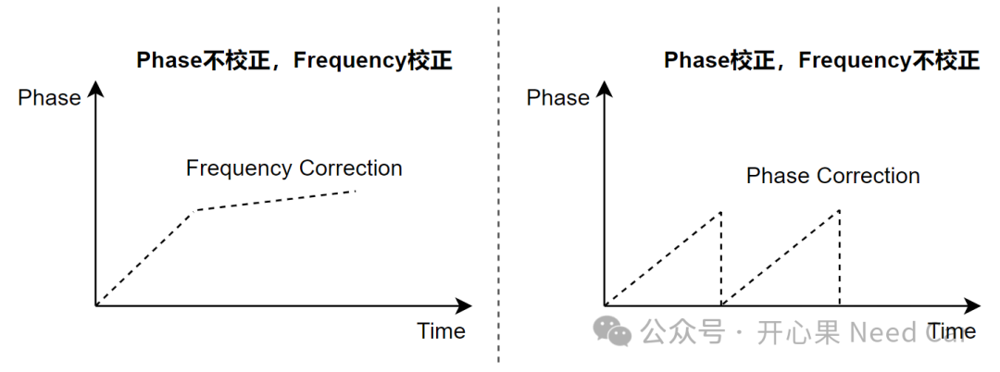
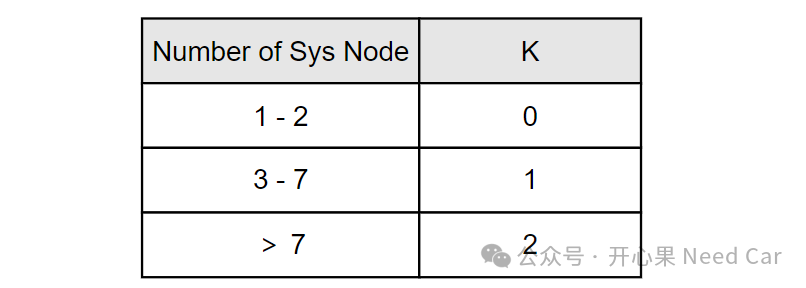
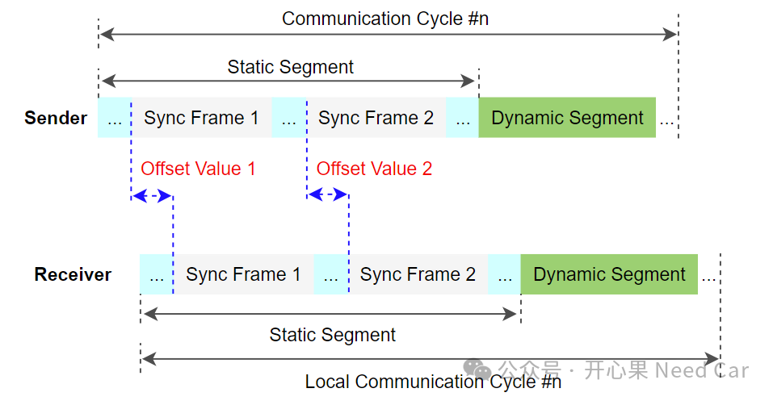
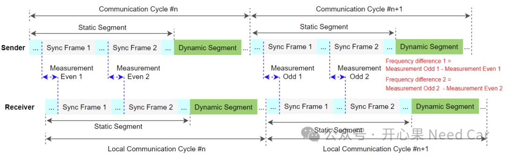
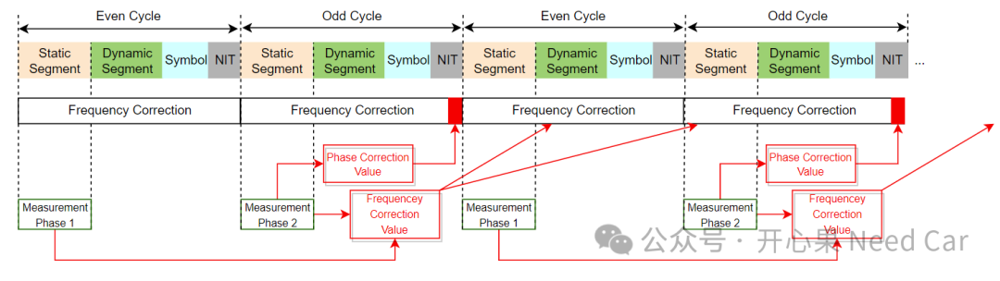

开心果 Need Car · 2024-08-14T06:37:00+08:00 · 微信原文
1、为什么要进行节点时间校正
对于Flexray通信系统，为什么需要对节点进行时钟校正，开篇我们已经提及了部分原因。这里我们举例说明，比如：某个芯片的晶振精度是±10~±30PPM（part per million，表示百万分之几），以30PPM进行计算，工作一天产生的最大偏差 = 24（小时）*60（分钟）*60（秒）*30/1000000 = 2.592s。可以看出，此晶振工作一天，最大可能产生2.592s的偏差。所以，及时修正偏差，对于提高通信稳定性是很有必要的。
2、Flexray中的时间校正
对于Flexray节点，时间校正包括两部分：
相位校正（Phase Correction）,又称偏移校正（OffsetCorrection）。虽然每个通信循环都需要进行相位偏差测量，但是，只在奇通信循环（odd）的网络空闲时间窗（NIT，Network Idle Time）内进行偏差补偿（在NIT中增加或者减少一定量的microticks）。通常，需求中会约束开始校正的起点，eg：一个5000MT的通信循环，校正时间起点在4981MT，示意如下：

频率校正（Frequency Correction），又称速率校正（Rate Correction），每两个通信循环校验一次，并且仅在奇（Odd）通信循环的静态段计算。
如何理解相位（Phase）偏差和频率（Frequencey）偏差，示意如下：


对于Flexray总线，同一网络簇中的每个FlexRay节点知道所有静态同步报文（Sync Frame）的发送和接收时机。经过几个通信周期的校正，所有FlexRay节点会在同一时间点，以同一速率启动通信。

1、相位偏差计算
相位偏差计算得到的值可以是正数，也可以是负数，单位：microtick。如果是负数，需要缩短NIT，即：提前开始下一个通信循环；如果是正数，则延长NIT，即：推迟开始下一个通信循环。
Phase Correction通过在每个奇周期（Odd Communication Cycle）的NIT段添加或删除一定数量的microtick进行校正。如此，Flexray节点即可改变下一个通信周期的起始时间，进而与其他FlexRay节点保持一致的通信起始点。
假设：某Flexray网段内，一共有8个同步节点，首先，计算出8个偏差值（Offset Value），此时，k = 2。之后，排序8个计算值（eg：18、17、10、8、6、-3、-5、-6），去除最大（18）、次大（17）、最小（-6）、次小值（-5）。最后，计算：（18 + 17 + 10 + 8 + 6 -3 -5 -6 ）/ 2 = 11（取整数）。注意，如上的偏差值必须在容差允许范围内，如果超过限制，直接设置为限值，并且设置error flag。
提示：工程中，同步节点一般在3 ~ 7个。如果同步节点在3~7个，计算时，Offset Value去掉最大和最小两个即可。

2、频率偏差计算
不管是计算相位校正值（Phase Correction Value），还是计算频率校正值（Frequencey Correction Value），均以Microtick 为单位。
频率校正，将计算的频率偏差值（一定数量的microticks），补偿到后续两个通信循环，即：通过改变后续两个通信循环总的microticks个数进行频率偏差修正，CofigurationMicroticks ± Rate Correction Value。举例：每个通信循环配置的Microticks为200000，Rate Correction Value = +10，则后续两个通信循环总的Microticks为200010。注意，频率偏差值也可以是负值（negative value）。
其中，计算频率偏差值也采用FTM算法，类似相位偏差计算，不再赘述。频率偏差值测量如下所示：

3、偏差补偿

往期精彩回顾